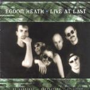

| Artist: | Egdon Heath |
| Title: | Live At Last |
| Label: | self produced |
| Length(s): | 44+49 minutes |
| Year(s) of release: | 2000 |
| Month of review: | [02/2001] |
| 1) | Peace Of The Brave | 9.03 |
| 2) | Gringo | 6.09 |
| 3) | No Second Faust | 7.41 |
| 4) | Secret Fence | 4.57 |
| 5) | Slightly In Despair | 7.30 |
| 6) | 1000 Stories | 8.33 |
Disc 2:
| 1) | Head In The Sand | 7.22 |
| 2) | Hail To Your Heart | 8.24 |
| 4) | Run For Life | 7.25 |
| 5) | The Killing Silence | 18.14 |
With Gringo we return to Him, The Snake and I. This is in fact one of their better compositions. The opening is melodic and acoustic. Kalsbeek's singing is not always spotless here, but it does enhance the live atmosphere. Of this song it is the bridge that makes the song. Very good. Plenty of variation if you listen closely, but there's nothing at all unnatural in the song. No Second Faust is one of the classic tracks from The Killing Silence (with the title track). The spacey opening and the weird lyrics make for a more menacing track. In the up-beat second part with rolling percussion the enthusiasm of Kalsbeek reaches great heights, maybe a bit too great in view of his la-la-la. The keyboards sound nicely different from the studio version.
Secret Fence is a special song, because there are now three versions: the original on In The City (not so strong), the great version sung by Van Der Stempel on the first SI Compilation disc and now we also have the Kalsbeek version. The song is also special, because it is the only song written by Wittevrongel and it is easily the best song on In The City. I still prefer the version of Van Der Stempel, which sounds more emotional.
Egdon Heath's only attempt at a (love) ballad is also a good one. Piano and acoustic guitar and emotional vocals make for a real tearjerker with a strong guitaristic conclusion by Aldo Adema and fitting vocal variations by Kalsbeek.
The conclusion of the first disc comes with 1000 Stories, the "epic" track of Him, The Snake And I. The first part with its hasty vocals and Mulder/Rappard swinging on the keyboards belies the dramatic conclusion.
The second disc opens with Head In The Sand. A slow bouncy opening soon erupts into heavy progressive. The vocal part is a bit harsh sounding, quite aggressive. I am not that fond of this part. Later on, the music has some melody as well and so the song has its moments.
Syb van der Ploeg, singer of the nationwide renowned band Frysian band De Kast sings a duet with Kalsbeek on Hail To Your Heart and he does so quite well. The voices of both men contrast quite well. Again this is quite a heavy track with an epic touch to it.
On A Bench then is in the long-waited for long version. I remember them doing this live around the corner in Het Kasteel. The not yet two minutes of the song is lengthened into eight of them. At the time the band also had a surprising aspect to the live show, but it was not used at this show (and you wouldn't notice it in the music anyway). Like the opener of this album we have some horns playing along.
Of the songs on this album, Run For Life is the least known to me. It is from the debut In The City. It is a slow plodding slightly mysterious piece, but compositionally, melodically and lyrically it is certainly not the strongest. It sounds a bit too "ordinary" at first, but the up-beat vocals make up for quite a bit.
The only way to close the chapter Egdon Heath is with the epic The Killing Silence. This eighteen minutes of melodic progressive has some hairraising and imposing passages, that make it one of the highlights of every one of their gigs. The star role I guess is for Adema here.